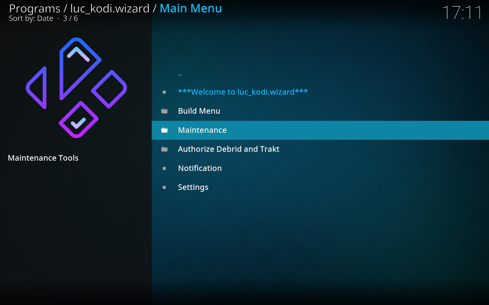
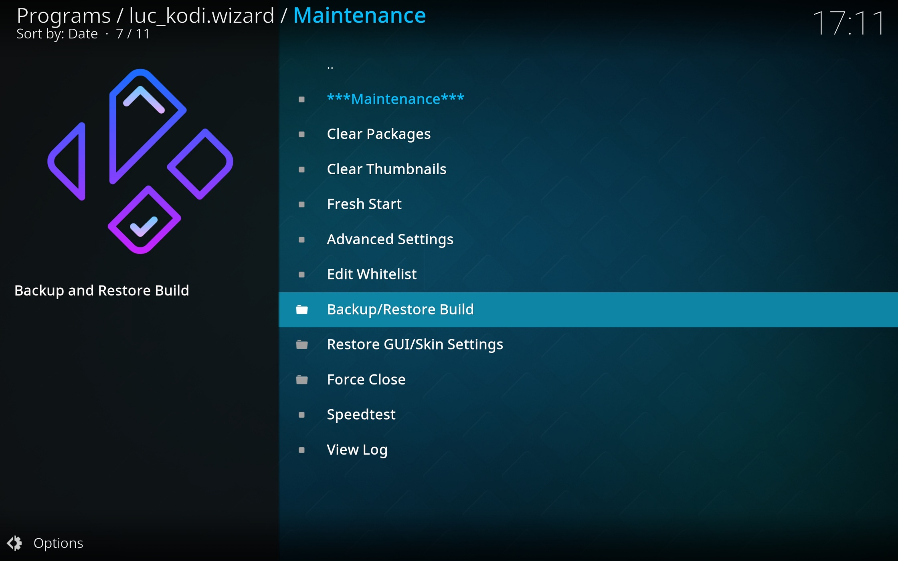
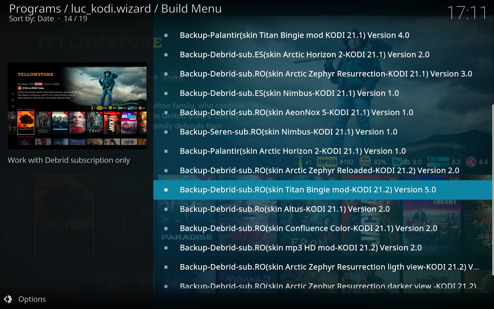

Bienvenido a luc_kodi.wizard
  
Este ,plugin.program.wizard ,sirve ,para crear y instalar backups y varías tareas de mantenimiento, para, la aplicación open source kodi. Esta inspirado ,en el plugin.program.simplewizard ,con todo los créditos para ellos,de mi parte y se incorpora con un pequeño toque mio.
luc_kodi.wizard-2.0.24.zip